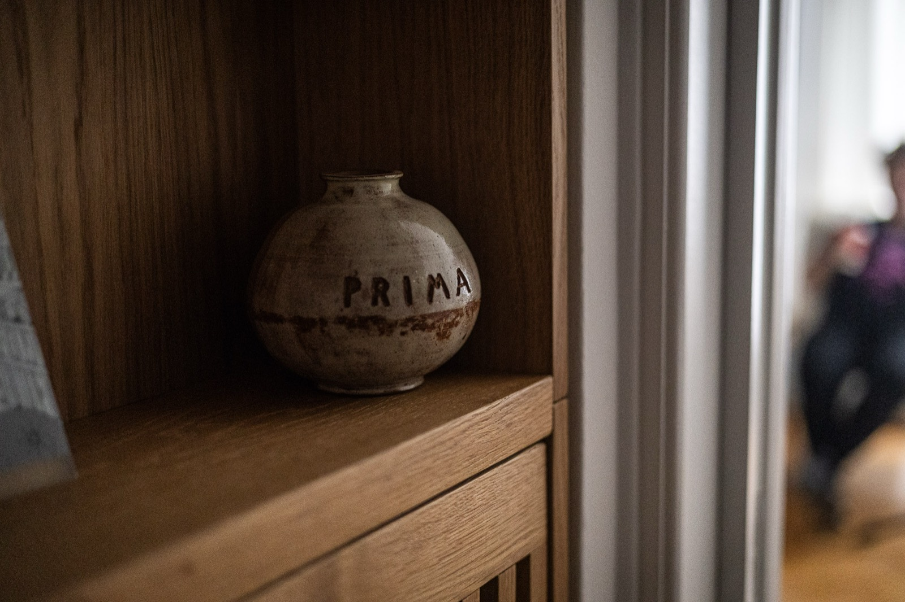

ADHD Assessment Αξιολόγηση ΔΕΠΥ
At ADHD Athens, we provide a comprehensive, multidisciplinary and evidence-based approach to the assessment and treatment of Attention Deficit Hyperactivity Disorder (ADHD) in adults. Our clinical model is aligned with international guidelines, ensuring high diagnostic accuracy and personalised care. Στο ADHD Athens ακολουθούμε μια ολοκληρωμένη, διεπιστημονική και επιστημονικά τεκμηριωμένη προσέγγιση για την αξιολόγηση και θεραπεία της Διαταραχής Ελλειμματικής Προσοχής και Υπερκινητικότητας (ΔΕΠΥ) σε ενήλικες. Η διαδικασία βασίζεται στις διεθνείς κατευθυντήριες οδηγίες, με στόχο τη μέγιστη διαγνωστική ακρίβεια και τη δημιουργία ενός εξατομικευμένου θεραπευτικού πλάνου.
Multidisciplinary AssessmentΔιεπιστημονική Αξιολόγηση
Our ADHD assessment involves both psychiatric and psychological evaluation, carried out by a consultant psychiatrist and specially trained psychologist / clinical mental health counsellor - psychotherapist. The aim is to gain a thorough understanding of attention difficulties, executive functioning, impulsivity and emotional regulation, as well as their impact on daily, academic and professional functioning. Η αξιολόγηση πραγματοποιείται από ψυχίατρο και εξειδικευμένους ψυχολόγο και σύμβουλο ψυχικής υγείας και περιλαμβάνει συνδυασμό ψυχιατρικής και ψυχολογικής εκτίμησης. Στόχος είναι η ολοκληρωμένη κατανόηση των δυσκολιών προσοχής, οργάνωσης, παρορμητικότητας και συναισθηματικής ρύθμισης, καθώς και η διερεύνηση της επίδρασης της ΔΕΠΥ στην καθημερινή, επαγγελματική και κοινωνική λειτουργικότητα.
Our process includes separate appointments with each professional (psychiatrist and psychologist/clinical mental health counsellor - psychotherapist), delivered either in person or online. Structured clinical interviews, psychometric tools and validated questionnaires are used, alongside a detailed developmental and psychiatric history. Η διαδικασία περιλαμβάνει ξεχωριστές συναντήσεις με δύο ειδικούς (ψυχίατρο και ψυχολόγο/σύμβουλο ψυχικής υγείας - ψυχοθεραπεύτρια), οι οποίες μπορεί να πραγματοποιηθούν δια ζώσης ή διαδικτυακά, ανάλογα με τις ανάγκες του θεραπευόμενου.
We place particular emphasis on differential diagnosis and the identification of co-occurring conditions such as anxiety, depression, sleep disorders, substance misuse trauma and other neurodevelopmental difficulties. Each assessment is tailored to the individual's profile and goals. Χρησιμοποιούνται κλινικές συνεντεύξεις, ψυχομετρικά εργαλεία και ερωτηματολόγια, καθώς και λεπτομερής διερεύνηση της αναπτυξιακής και ψυχιατρικού ιστορικού. Ιδιαίτερη έμφαση δίνεται στη διαφορική διάγνωση και στην αναγνώριση πιθανών συννοσηροτήτων, όπως άγχος, κατάθλιψη, διαταραχές ύπνου, χρήση ουσιών, τραύμα ή άλλες νευροαναπτυξιακές δυσκολίες. Η προσέγγιση είναι εξατομικευμένη και προσαρμόζεται στο προφίλ και τους στόχους κάθε ατόμου.

Multidisciplinary Formulation and DiagnosisΔιεπιστημονική Συνεργασία και Διάγνωση
Following the completion of the assessment, a structured multidisciplinary discussion takes place. During this process, all clinical information is integrated to reach a clear and well-supported diagnosis. Μετά την ολοκλήρωση της αξιολόγησης, πραγματοποιείται συστηματικός διεπιστημονικός διάλογος μεταξύ των ειδικών. Μέσα από αυτή τη συνεργασία συντίθενται όλα τα κλινικά δεδομένα, προκειμένου να διαμορφωθεί μια σαφής και τεκμηριωμένη διάγνωση.
This collaborative model ensures that ADHD and any coexisting conditions are carefully evaluated, leading to a comprehensive understanding of the individual's strengths and challenges. Η διαδικασία αυτή διασφαλίζει ότι καλύπτονται όλες οι πτυχές της ψυχικής υγείας και ότι εντοπίζονται τόσο η ΔΕΠΥ όσο και τυχόν συνυπάρχουσες δυσκολίες. Στόχος είναι να προσφερθεί μια ολοκληρωμένη κατανόηση των προκλήσεων και των δυνατοτήτων του θεραπευόμενου.
The diagnosis and treatment recommendations are presented in a final feedback session, where findings, options and next steps are discussed in detail. Η διάγνωση και το θεραπευτικό πλάνο παρουσιάζονται σε μια τελική συνάντηση, κατά την οποία συζητούνται αναλυτικά τα ευρήματα, οι επιλογές θεραπείας και τα επόμενα βήματα.